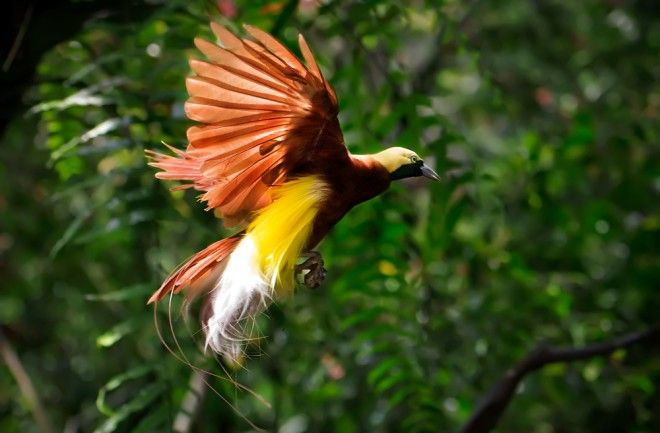

01
Cendrawasih
Burung cendrawasih adalah burung yang terkenal dengan bulu indah berwarna cerah sehingga disebut juga "bird of paradise" (burung surga). Burung ini berasal dari Papua (Indonesia), Papua Nugini, dan pulau-pulau sekitarnya, hidup di hutan hujan tropis terutama di bagian atas pohon.